24 Hired in Data clients on the offers, raises, and pivots they landed. Click anyone below to jump straight to their story.
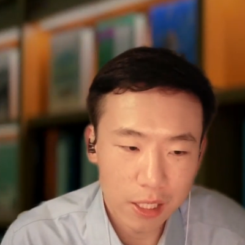
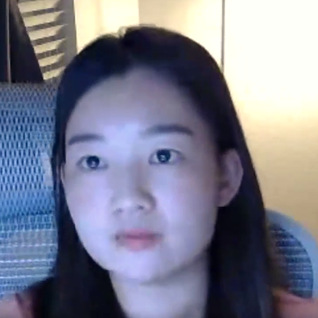
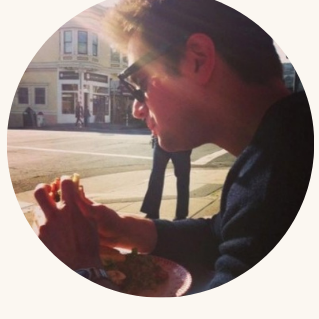
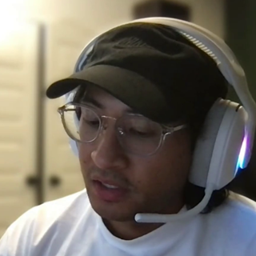
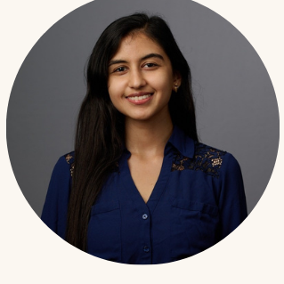
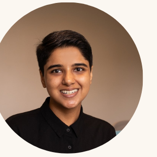
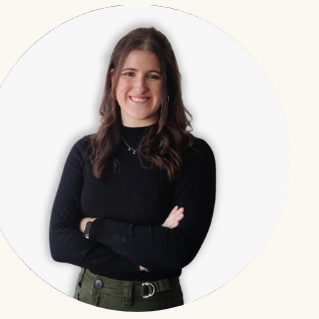
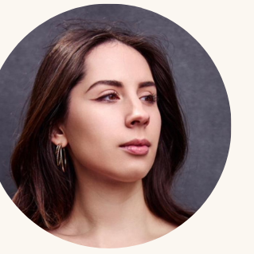
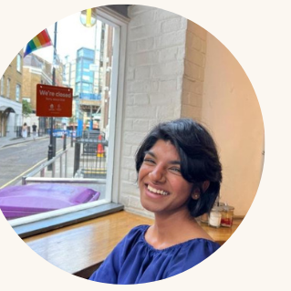
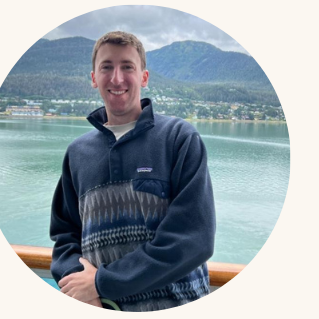
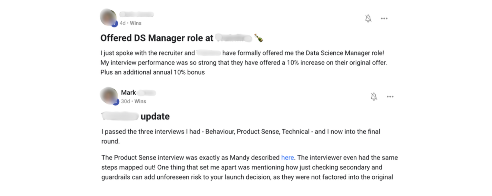
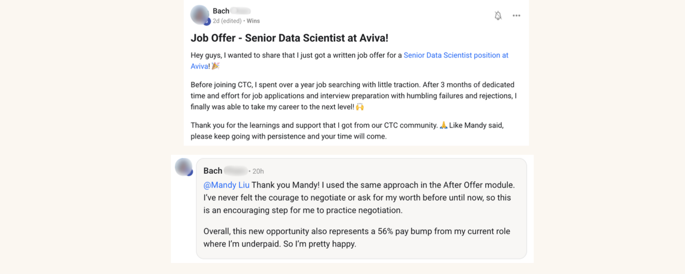
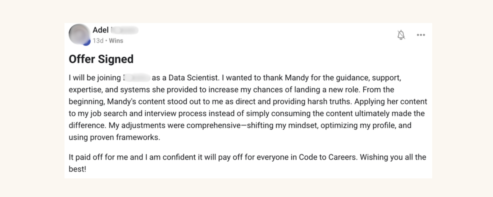
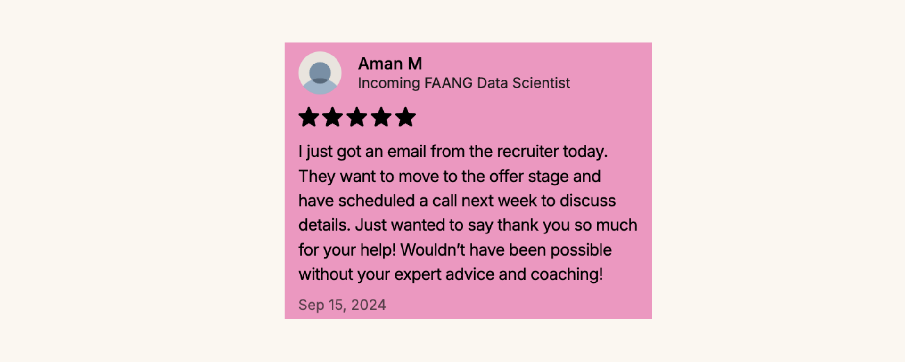
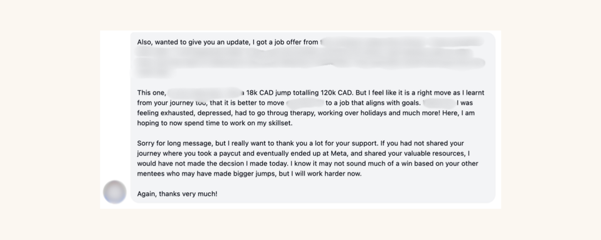
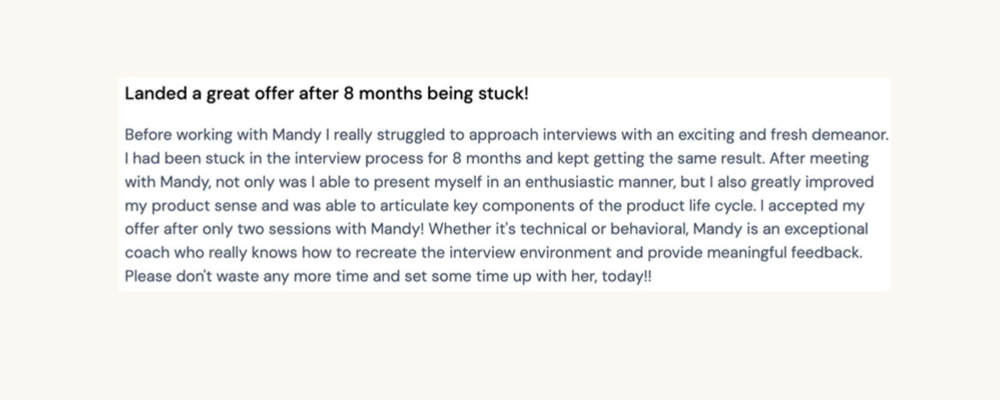
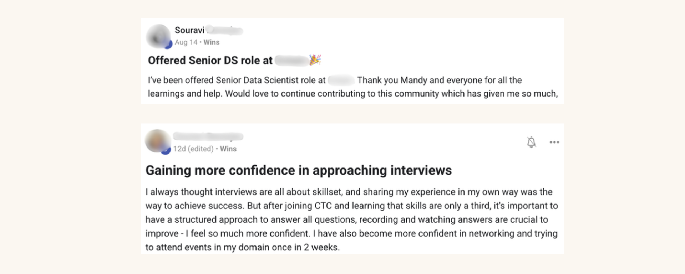
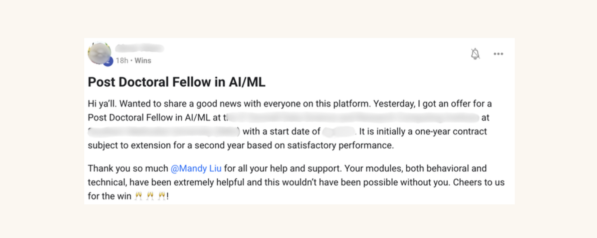
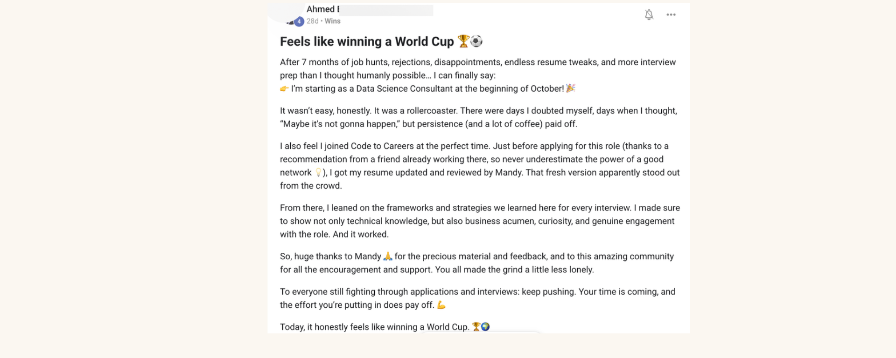
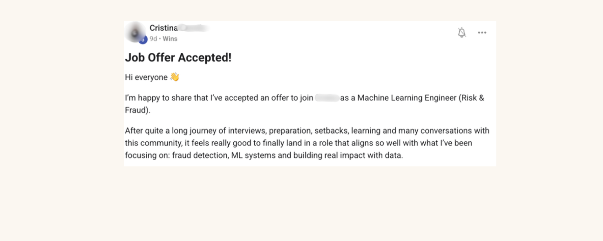
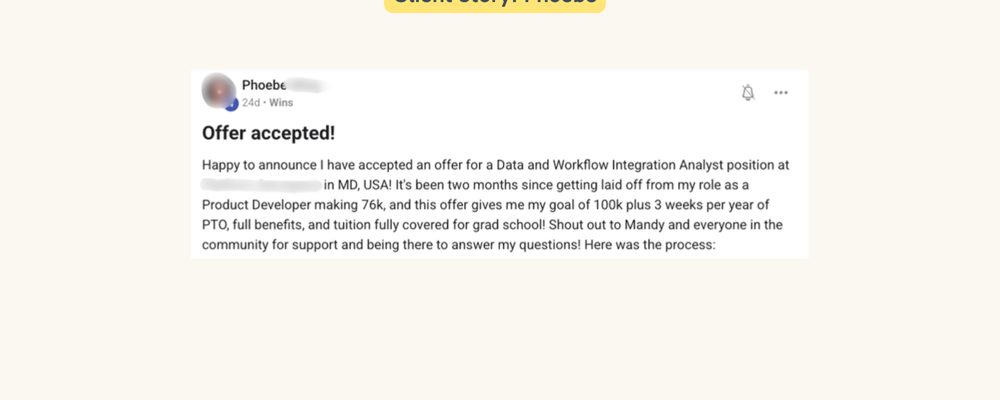
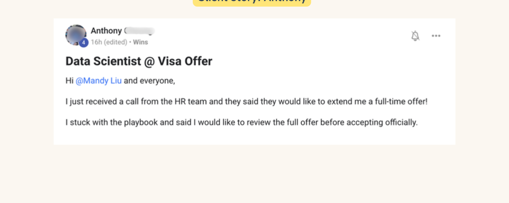
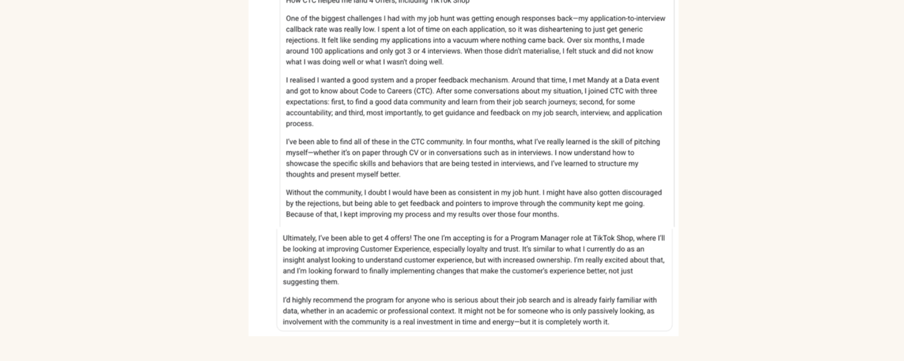
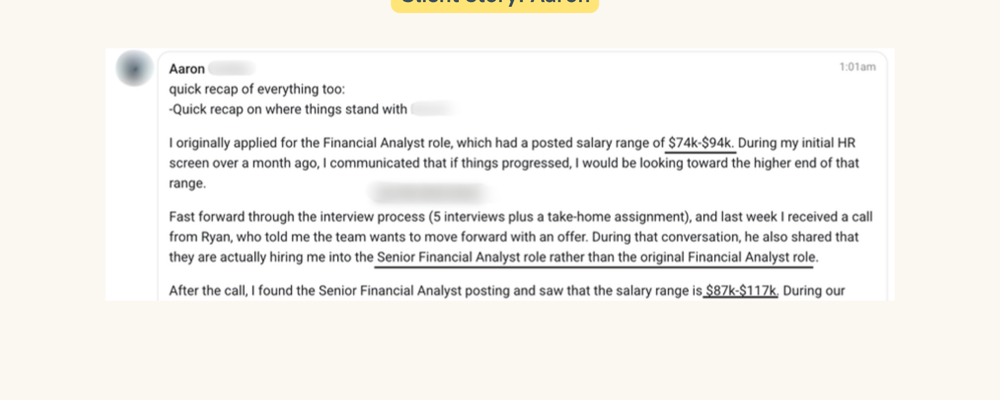
Find more testimonials and LinkedIn recommendations here.
While not every client shares their journey publicly, my priority is making you the next success story.
See you on the inside.